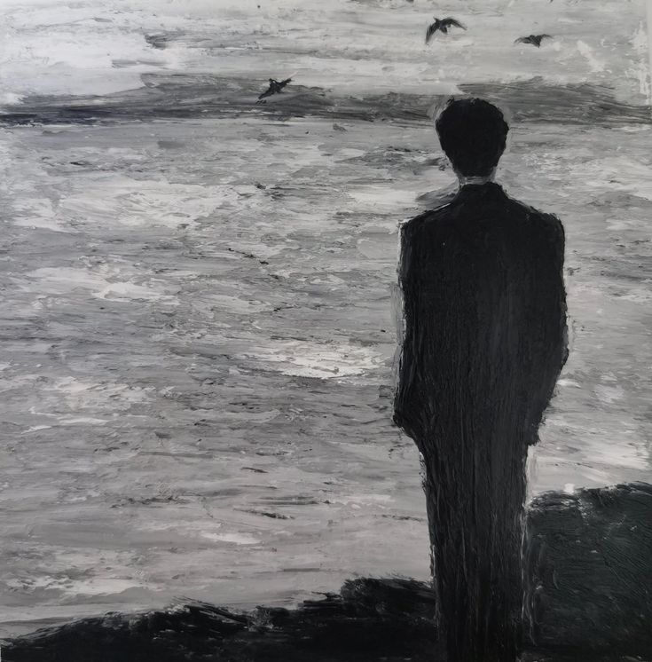

Kita sering bicara seolah hidup belum benar-benar dimulai.
“Nanti setelah lulus.”
“Nanti setelah dapat kerja.”
“Nanti setelah punya jabatan.”
“Nanti setelah berhasil.”
Sekarang cuma masa persiapan. Masa ketika kita harus tahan lelah, tahan bosan, tahan melakukan hal yang tidak kita inginkan. Semua demi satu janji: suatu hari nanti, kita akhirnya bisa hidup.
Tapi kapan tepatnya “nanti” itu datang?
Kita mengejar profesi yang bisa dibanggakan. Kesuksesan yang bisa dilihat orang. Kehidupan yang kalau diceritakan terdengar meyakinkan.
Kita ingin menjadi seseorang.
Lalu tanpa sadar, kita mulai memperlakukan diri kita yang sekarang seolah belum menjadi siapa-siapa.
Seolah hidup kita baru sah dihitung kalau sudah menghasilkan sesuatu.
Nilai bagus menjadi bukti bahwa kita layak.
Pekerjaan bagus menjadi bukti bahwa kita berhasil.
Jabatan tinggi menjadi bukti bahwa semua pengorbanan kita ada gunanya.
Dan ketika bukti itu belum datang, kita menunggu. Kita bilang belum waktunya bahagia. Belum waktunya beristirahat. Belum waktunya merasa cukup.
Kita menyebutnya ambisi.
Tapi mungkin sebagian ambisi hanyalah rasa takut yang berpakaian rapi.
Takut dianggap gagal.
Takut mengecewakan orang lain.
Takut menjadi biasa saja.
Takut kalau kita berhenti berlari, kita harus berhadapan dengan pertanyaan yang selama ini kita hindari:
Kalau aku tidak sedang mengejar apa pun, apakah aku masih tahu siapa diriku?

Ambisi memang bisa memberi arah. Ia bisa membuat kita belajar, bekerja keras, dan menciptakan sesuatu yang sebelumnya hanya kita bayangkan.
Tapi ambisi juga bisa menjadi cara yang sangat terhormat untuk membenci hidup kita sendiri.
Kita tidak pernah benar-benar hadir di tempat kita berada. Pikiran kita selalu ada beberapa langkah di depan.
Saat belajar, kita ingin cepat lulus.
Saat bekerja, kita ingin cepat naik jabatan.
Saat sudah mendapat jabatan, kita mulai membayangkan posisi berikutnya.
Setiap pencapaian terasa seperti pintu menuju kehidupan yang sebenarnya. Tapi begitu pintu itu terbuka, di baliknya sudah ada pintu lain.
Mungkin bukan kesuksesan yang terus menjauh.
Mungkin kita yang terus memindahkan garis akhirnya.
Kita berkata sedang membangun masa depan. Tapi masa depan macam apa yang sedang dibangun jika setiap hari di dalamnya hanya menjadi anak tangga yang harus segera diinjak?
Kalau pekerjaan yang kita impikan menuntut kita mengorbankan seluruh waktu, tenaga, dan rasa ingin tahu, lalu siapa yang akan menikmati hidup setelah kita sampai?
Versi diri kita yang kelelahan?
Versi diri kita yang lupa kenapa semua ini dimulai?
Atau orang lain, yang hanya melihat hasilnya dan menyebut kita sukses?
Mungkin masalahnya bukan karena kita punya ambisi terlalu besar.
Mungkin masalahnya adalah kita mengira ambisi memberi kita hak untuk menunda hidup.
Kita boleh menginginkan lebih. Kita boleh punya tujuan besar. Tapi jangan sampai semua hal yang membuat hidup terasa nyata terus dianggap gangguan: percakapan yang tidak menghasilkan apa-apa, waktu kosong, tidur cukup, kegagalan, rasa penasaran, atau keberanian untuk berubah arah.
Sebab kalau kita hanya merasa hidup setelah berhasil, kita sedang menyerahkan seluruh hidup kepada satu syarat yang terus berubah.
Dan kalau syarat itu tak pernah selesai, hidup kita pun tak pernah benar-benar dimulai.
“Jangan habiskan hidup untuk menjadi seseorang, sampai lupa menjadi manusia.”